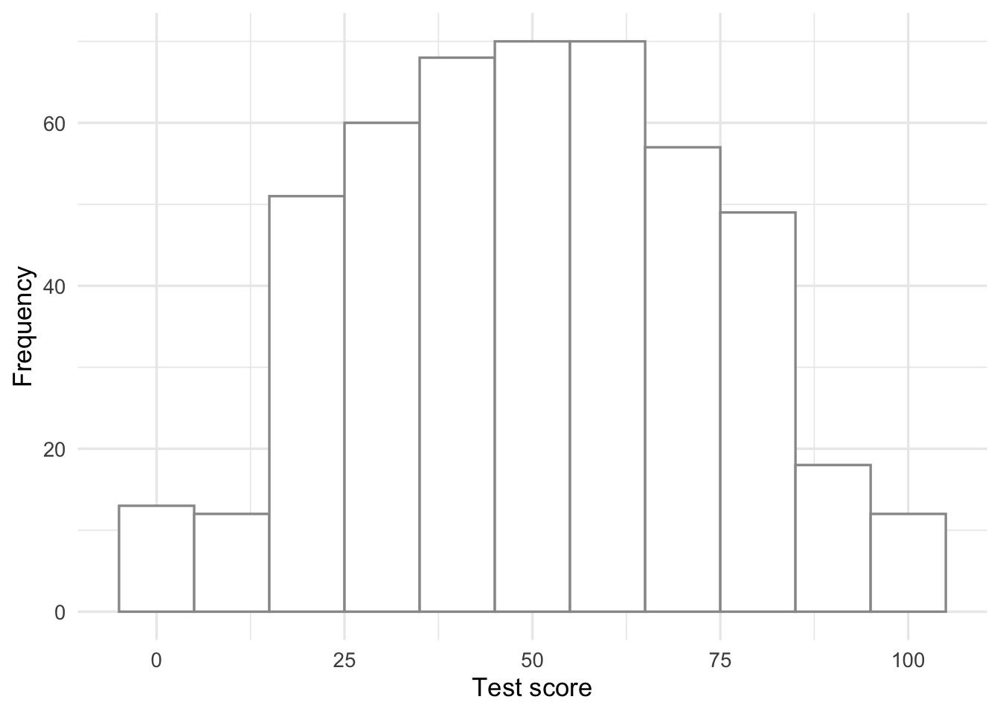
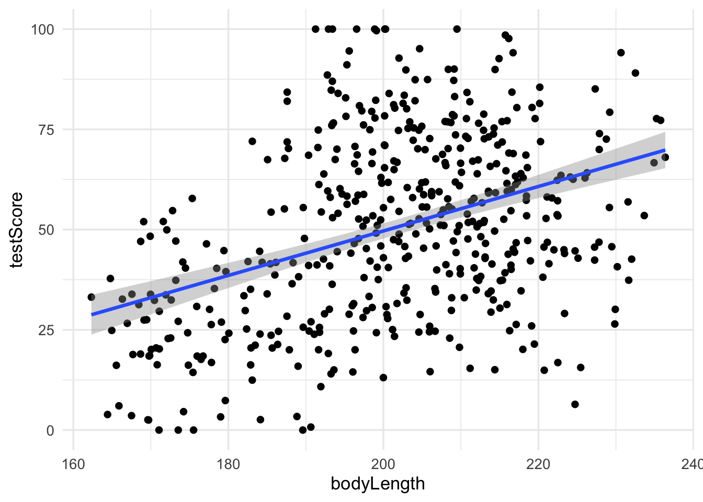
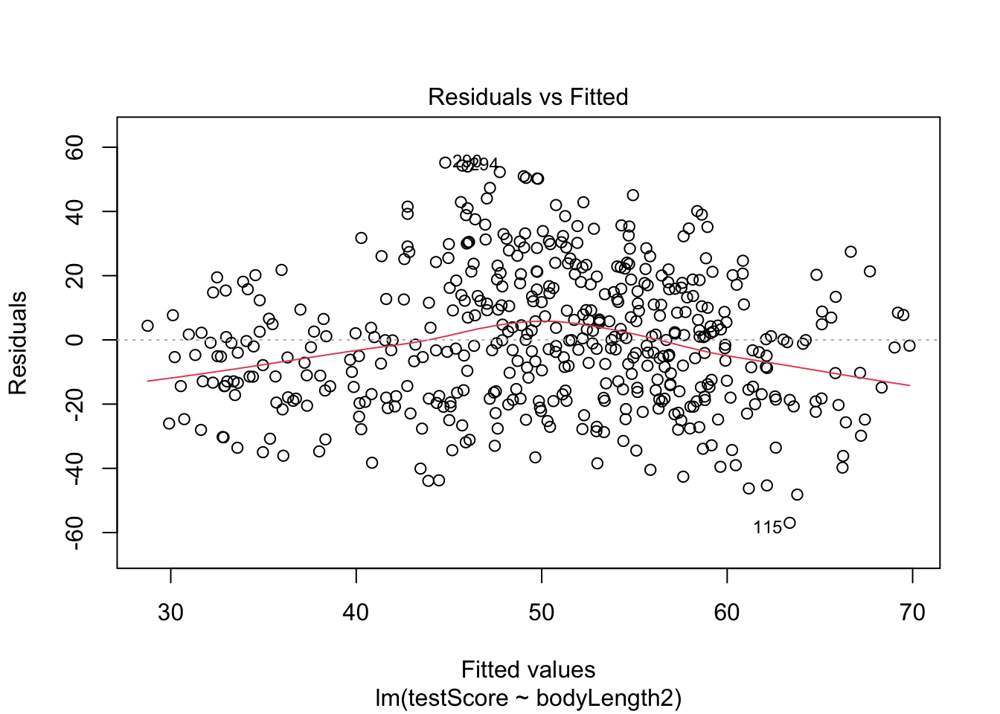
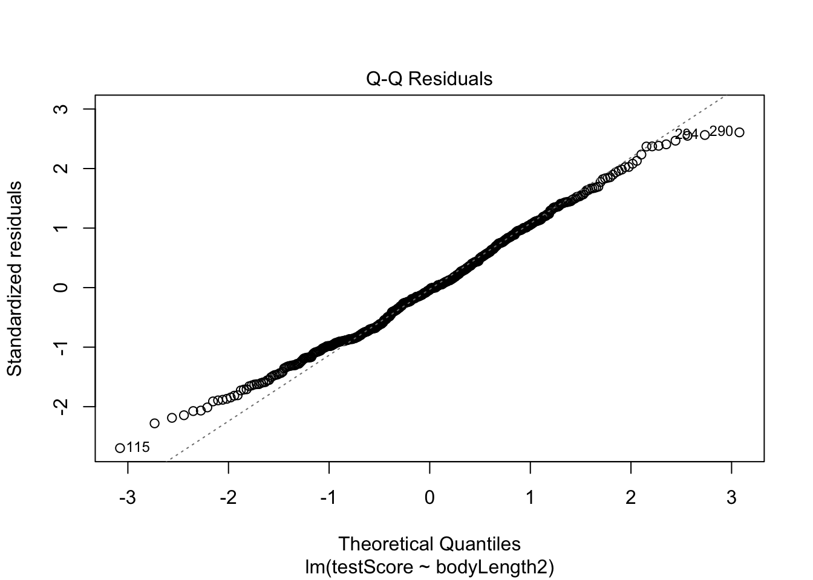
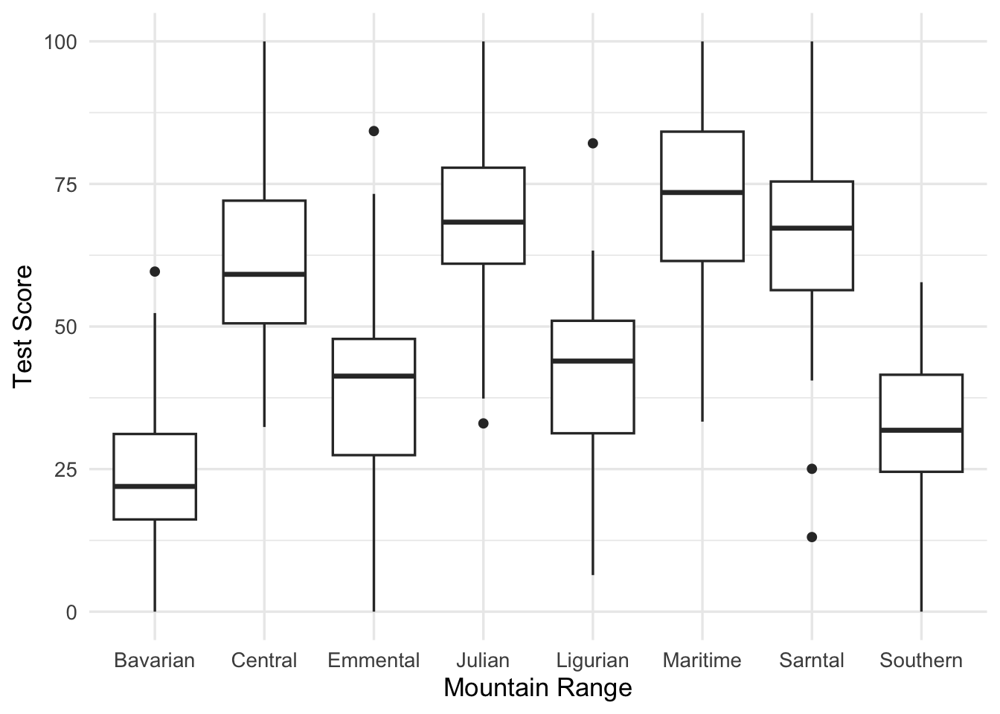
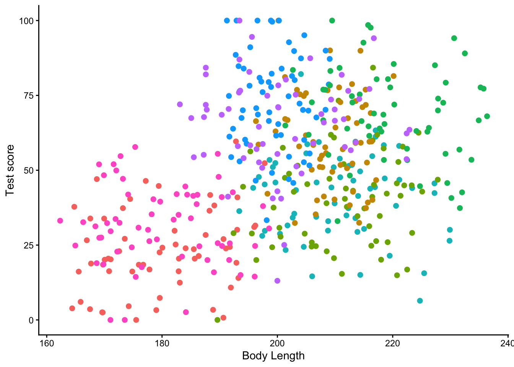
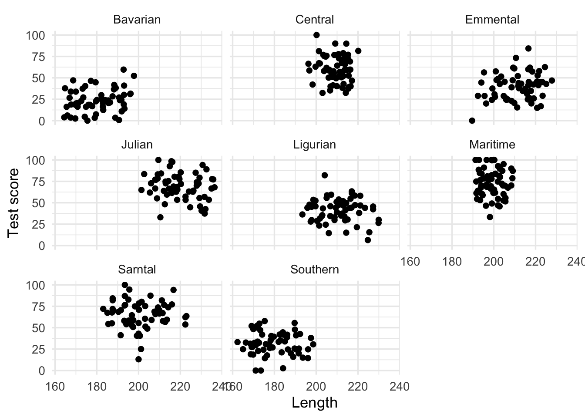
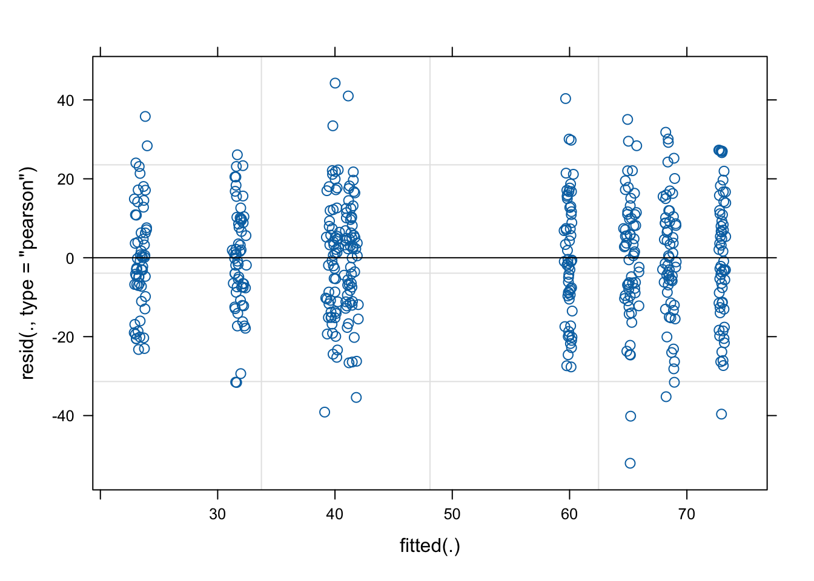
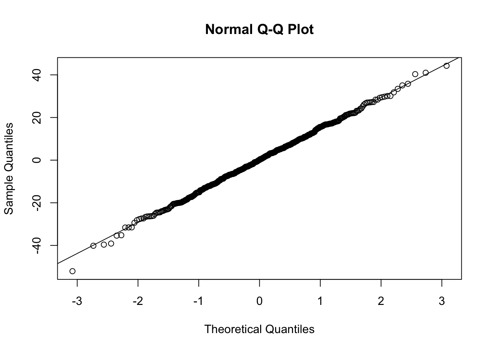

knitr::opts_chunk$set(message = FALSE, warning = FALSE)21 Mixed effects analysis
For this chapter you will find it useful to have this RStudio project folder if you wish to follow along and/or see how a complete script might look.
library(tidyverse)
library(here)
library(lme4)
library(ggfortify)
ggplot2::theme_set(ggplot2::theme_minimal(base_size = 13))Based on a tutorial by Gabriela K Hajduk that itself is based on a workshop developed by Liam Bailey contact details: gkhajduk.github.io; email: gkhajduk@gmail.com date: 2017-03-09
21.1 What is mixed modelling and why does it matter?
Ecological and biological data we use are often complex and messy. We can have different grouping factors like populations, species, sites we collect the data at etc. Sample sizes might leave something to be desired too, especially if we are trying to fit a complicated model with many parameters. On top of that our data points might not be truly independent - for instance, we might be using quadrats within our sites to collect the data (and so there is structure to our data: quadrats are nested within the sites).
This is why mixed models were developed, to deal with such messy data and to allow us to use all our data, even when we have low sample sizes for structured data with many covariates to be fitted. On top of all that mixed models allow us to save degrees of freedom compared to running standard regression.
We will cover only the linear mixed models here, but if you are trying to “extend” your generalised linear model fear not: there are generalised linear mixed effects models out there too.
21.2 Explore the data
We are going to focus on a fictional study system, dragons, so that we don’t have to get too distracted with the specifics of this example. Imagine that we decided to train dragons and so we went out into the mountains and collected data on dragon intelligence (testScore) as a prerequisite. We sampled individuals over a range of body lengths and across three sites in eight different mountain ranges. Start from loading the data and having a look at them.
Get the data
filepath <- here("data","dragons.csv")
dragons <- read_csv(filepath)
head(dragons)# A tibble: 6 × 4
testScore bodyLength mountainRange site
<dbl> <dbl> <chr> <chr>
1 16.1 166. Bavarian a
2 33.9 168. Bavarian a
3 6.04 166. Bavarian a
4 18.8 168. Bavarian a
5 33.9 170. Bavarian a
6 47.0 169. Bavarian a Suppose we want to know how the body length affects test scores.
Have a look at the data distribution of this response variable:
dragons |>
ggplot(aes(x = testScore)) +
geom_histogram(binwidth = 10, colour = "gray60",fill = "white") +
labs(x = "Test score",
y = "Frequency")
This seems close to being a normal distribution - good!
It is good practice to standardise your explanatory variables before proceeding, so that they have a mean of zero and standard deviation of one. It ensures that the estimated coefficients are all on the same scale, making it easier to compare effect sizes (and it improves model convergence). To do that we subtract the mean and divide by the standard deviation, and save the standardised daa in a new column called bodyLength2:
dragons <- dragons |>
mutate(bodyLength2 = (bodyLength - mean(bodyLength))/sd(bodyLength))Back to our question: is test score affected by body length?
21.3 Fit all data in one analysis
One way to analyse this data would be to try fitting a linear model to all our data, ignoring the sites and the mountain ranges for now.
basic.lm <- lm(testScore ~ bodyLength2, data = dragons)
summary(basic.lm)
Call:
lm(formula = testScore ~ bodyLength2, data = dragons)
Residuals:
Min 1Q Median 3Q Max
-56.962 -16.411 -0.783 15.193 55.200
Coefficients:
Estimate Std. Error t value Pr(>|t|)
(Intercept) 50.3860 0.9676 52.072 <2e-16 ***
bodyLength2 8.9956 0.9686 9.287 <2e-16 ***
---
Signif. codes: 0 '***' 0.001 '**' 0.01 '*' 0.05 '.' 0.1 ' ' 1
Residual standard error: 21.2 on 478 degrees of freedom
Multiple R-squared: 0.1529, Adjusted R-squared: 0.1511
F-statistic: 86.25 on 1 and 478 DF, p-value: < 2.2e-16Let’s plot the data:
dragons |>
ggplot(aes(x = bodyLength, y = testScore)) +
geom_point()+
geom_smooth(method = "lm")
Diagnostics for the model:
Plot the residuals - the red line should be close to being flat
plot(basic.lm, which = 1)
Not perfect, but not bad
qq plot - should get a straight line:
plot(basic.lm, which = 2)
A bit ragged at the ends, but pretty good.
However, what about observation independence? Are our data independent? We collected multiple samples from eight mountain ranges. It’s perfectly plausible that the data from within each mountain range are more similar to each other than the data from different mountain ranges - they are correlated. Pseudoreplication isn’t our friend.
Have a look at the data to see if the above is true
dragons |>
ggplot(aes(x = mountainRange, y = testScore)) +
geom_boxplot() +
labs(x = "Mountain Range",
y = "Test Score")
or we could plot a scatter plot, with a different colour for each mountain range:
dragons |>
ggplot(aes(x = bodyLength, y = testScore, colour = mountainRange))+
geom_point(size = 2) +
labs(x = "Body Length",
y = "Test score") +
theme_classic() +
theme(legend.position = "none")
From the above plots it looks like there is a correlation within mountain ranges of both dragon body length and test scores. This suggests that our observations from within each of the ranges are not independent. We can’t ignore that. So what do we do?
21.4 Run multiple analyses
We could run many separate analyses and fit a regression for each of the mountain ranges. Lets have a quick look at the data split by mountain range. We use facet_wrap() to do that
dragons |>
ggplot(aes(bodyLength, testScore)) +
geom_point() +
facet_wrap(~ mountainRange) +
labs(x = "Length",
y = "Test score")
That’s eight analyses. Oh wait, we also have different sites, which similarly to mountain ranges aren’t independent… So we could run an analysis for each site in each range separately.
To do the above we would have to estimate a slope and intercept parameter for each regression. That’s two parameters, three sites and eight mountain ranges, which means 48 parameter estimates (2 x 3 x 8 = 48)! Moreover, the sample size for each analysis would be only 20.
This presents problems - not only are we hugely decreasing our sample size, but we are also increasing the type one error rate due to carrying out multiple comparisons. Not ideal!
21.5 Modify the current model
We want to use all the data, but to account for the data coming from different mountain ranges. One approach would be to add mountain range as a fixed effect to our basic.lm
mountain.lm <- lm(testScore ~ bodyLength2 + mountainRange, data = dragons)
summary(mountain.lm)
Call:
lm(formula = testScore ~ bodyLength2 + mountainRange, data = dragons)
Residuals:
Min 1Q Median 3Q Max
-52.263 -9.926 0.361 9.994 44.488
Coefficients:
Estimate Std. Error t value Pr(>|t|)
(Intercept) 23.3818 2.5792 9.065 < 2e-16 ***
bodyLength2 0.2055 1.2927 0.159 0.87379
mountainRangeCentral 36.5828 3.5993 10.164 < 2e-16 ***
mountainRangeEmmental 16.2092 3.6966 4.385 1.43e-05 ***
mountainRangeJulian 45.1147 4.1901 10.767 < 2e-16 ***
mountainRangeLigurian 17.7478 3.6736 4.831 1.84e-06 ***
mountainRangeMaritime 49.8813 3.1392 15.890 < 2e-16 ***
mountainRangeSarntal 41.9784 3.1972 13.130 < 2e-16 ***
mountainRangeSouthern 8.5196 2.7313 3.119 0.00192 **
---
Signif. codes: 0 '***' 0.001 '**' 0.01 '*' 0.05 '.' 0.1 ' ' 1
Residual standard error: 14.96 on 471 degrees of freedom
Multiple R-squared: 0.5843, Adjusted R-squared: 0.5773
F-statistic: 82.76 on 8 and 471 DF, p-value: < 2.2e-16Now body length is not significant. But let’s think about what we are doing here for a second. The above model is estimating the difference in test scores between the mountain ranges - we can see all of them in the model output returned by summary(). But we are not interested in that, we just want to know whether body length affects test scores and we want to simply control for the variation coming from mountain ranges.
This is what we refer to as “random factors” and so we arrive at mixed effects models.
21.6 Mixed effects models
Mixed model is a good choice here: it will allow us to use all the data we have (higher sample size) and yet account for the correlations between data coming from the sites and mountain ranges. We will also estimate fewer parameters and avoid problems with multiple comparisons that we would encounter while using separate regressions.
Fixed and Random effects Let’s talk a little about the fixed and random effects first - the literature isn’t clear on the exact definitions of those, so I’m going to give you a somehow “introductory” explanation. See links in the further reading below if you want to know more.
In some cases the same variable could be considered either a random or a fixed effect (and sometimes even both at the same time!), so you have to think not only about your data, but also about the questions you are asking and construct your models accordingly.
In broad terms, with fixed effects we are interested in evaluating the levels of our variable and using data from all its levels. In our case here, we are interested in making conclusions about how dragon body length impacts the dragon’s test score. So body length is a fixed effect.
On the other hand, random effects (or random factors - as they will be categorical, you can’t force R to treat a continuous variable as a random effect) are usually grouping factors for which we are trying to control. A lot of the time we are not specifically interested in their impact on the response variable. Additionally, the data for our random effect is just a sample of all the possibilities.
Strictly speaking it’s all about making our models better - and getting better estimates.
In this particular case, we are looking to control for the effects of the mountain range. We haven’t sampled all the mountain ranges in the world (we have eight), so our data are just a random sample of all the existing mountain ranges. We are not really interested in the effect of each specific mountain range on the test score - but we know that the test scores from within the ranges might be correlated, so we want to control for that.
If we specifically chose eight particular mountain ranges a priori and we were interested in those ranges and wanted to make predictions about them then mountain range would be fitted as a fixed effect.
NOTE: Generally you want your random effect to have more than five levels. So, for instance, if we wanted to control for the effects of dragon’s sex on intelligence, we would fit sex (a two level factor: male or female) as a fixed, not random, effect.
So the big question is: what are you trying to do? What are you trying to make predictions about? What is just variation (a.k.a “noise”) that you need to control for?
Further reading for the keen:
- Is it a fixed or random effect?
- A useful way to think about fixed vs. random effects is in terms of partitioning the variation and estimating random effects with partial pooling. The description here is the most accessible one I could find for now and you can find more opinions in the comments of under the previous link too (search for pooling and shrinkage too if you are very keen).
- How many terms? On model complexity
- More on model complexity
- Have a look at some of the fixed and random effects definitions gathered by Gelman in this paper (you can also find them here if you can’t access the paper).
So, we have a response variable, the test score, and we are attempting to explain part of the variation in score through fitting body length as a fixed effect. But the response variable has some residual variation (i.e. unexplained variation) associated with mountain ranges. By using random effects we are modeling that unexplained variation through variance.
[Sidenote: If you are confused between variation and variance: variation is a generic word, similar to dispersion or variability; variance is a particular measure of variation, it quantifies the dispersion if you wish]
Note that our question changes slightly here: while we still want to know whether there is an association between dragon’s body length and the test score, we want to know if that association exists after controlling for the variation in mountain ranges.
We will fit the random effect using (1|variableName):
mixed.lmer <- lmer(testScore ~ bodyLength2 + (1|mountainRange), data = dragons)
summary(mixed.lmer)Linear mixed model fit by REML ['lmerMod']
Formula: testScore ~ bodyLength2 + (1 | mountainRange)
Data: dragons
REML criterion at convergence: 3985.6
Scaled residuals:
Min 1Q Median 3Q Max
-3.4815 -0.6513 0.0066 0.6685 2.9583
Random effects:
Groups Name Variance Std.Dev.
mountainRange (Intercept) 339.7 18.43
Residual 223.8 14.96
Number of obs: 480, groups: mountainRange, 8
Fixed effects:
Estimate Std. Error t value
(Intercept) 50.3860 6.5517 7.690
bodyLength2 0.5377 1.2750 0.422
Correlation of Fixed Effects:
(Intr)
bodyLength2 0.000 Once we accounted for the mountain ranges, it’s obvious that dragon body length doesn’t actually explain the differences in the test scores.
Keep in mind that the random effect of the mountain range is meant to capture all the influences of mountain ranges on dragon test scores - whether we observed those influences explicitly or not, whether those influences are big or small etc. It could be many, many teeny-tiny influences that, when combined, affect the test scores and that’s what we are hoping to control for.
As always, it’s good practice to have a look at the plots to check our assumptions:
plot(mixed.lmer)[1] # looks alright, no paterns evident
qqnorm(resid(mixed.lmer))
qqline(resid(mixed.lmer)) # points fall nicely onto the line - good!
Let’s go back to the summary and look at our results again.
summary(mixed.lmer)Linear mixed model fit by REML ['lmerMod']
Formula: testScore ~ bodyLength2 + (1 | mountainRange)
Data: dragons
REML criterion at convergence: 3985.6
Scaled residuals:
Min 1Q Median 3Q Max
-3.4815 -0.6513 0.0066 0.6685 2.9583
Random effects:
Groups Name Variance Std.Dev.
mountainRange (Intercept) 339.7 18.43
Residual 223.8 14.96
Number of obs: 480, groups: mountainRange, 8
Fixed effects:
Estimate Std. Error t value
(Intercept) 50.3860 6.5517 7.690
bodyLength2 0.5377 1.2750 0.422
Correlation of Fixed Effects:
(Intr)
bodyLength2 0.000 We can see the variance for the mountainRange = 339.7. Mountain ranges are clearly important - they explain a lot of variation. How do we know that? We can take the variance for the mountainRange and divide it by the total variance:
339.7/(339.7 + 223.8) # ~60 %[1] 0.6028394So the differences between mountain ranges explain ~60% of the variance. Do keep in mind that’s 60% of variance “left over” after the variance explained by our fixed effects.
Types of random effects Before we go any further let’s review the syntax above and chat about crossed and nested random effects. It’s useful to get those clear in your head.
Reminder: a factor is just any categorical independent variable.
Above we used (1|mountainRange) to fit our random effect - whatever is on the right side of | operator is a factor and referred to as a “grouping factor” for the term
Random effects (factors) can be crossed or nested - it depends on the relationship between the variables. Let’s have a look.
Crossed random effects Be careful with the nomenclature. There are “hierarchical linear models” (HLMs) or “multilevel models” out there, but while all HLMs are mixed models, not all mixed models are hierarchical. That’s because you can have crossed (or partially crossed) random factors that do not represent levels in a hierarchy.
Think for instance about our study where you monitor dragons (subject) across different mountain ranges (context) and imagine that we collect multiple observations per dragon (we give it the test multiple times - risking pseudoreplication). Since our dragons can fly it’s easy to imagine that we might observe the same dragon across different mountain ranges, but also that we might not see all the dragons visiting all of the mountain ranges. Therefore, we can potentially observe every dragon in every mountain range (crossed) or at least observe some dragons across some of the mountain ranges (partially crossed). We would then fit the identity of the dragon and mountain range as (partially) crossed random effects.
Nested random effects If this sounds confusing, not to worry - lme4 handles partially and fully crossed factors well, they don’t have to be hierarchical or “multilevel” by design. However, the same model specification can be used to represent both (partially) crossed or nested factors, so you can’t use the models specification to tell you what’s going on with the random factors, you have to look at the structure of the factors in the data. To make things easier for yourself code your data properly and avoid implicit nesting. Not sure what implicit nesting is? Read on.
Implicit vs. explicit nesting To tackle this, let’s look at another aspect of our study: we collected the data on dragons not only across multiple mountain ranges, but also across several sites within those mountain ranges. If you don’t remember have another look at the data:
head(dragons) # we have site and mountainRange# A tibble: 6 × 5
testScore bodyLength mountainRange site bodyLength2
<dbl> <dbl> <chr> <chr> <dbl>
1 16.1 166. Bavarian a -2.21
2 33.9 168. Bavarian a -2.08
3 6.04 166. Bavarian a -2.19
4 18.8 168. Bavarian a -2.07
5 33.9 170. Bavarian a -1.93
6 47.0 169. Bavarian a -2.01str(dragons) # we took samples from three sites per mountain range and eight mountain ranges in totaltibble [480 × 5] (S3: tbl_df/tbl/data.frame)
$ testScore : num [1:480] 16.15 33.89 6.04 18.84 33.86 ...
$ bodyLength : num [1:480] 166 168 166 168 170 ...
$ mountainRange: chr [1:480] "Bavarian" "Bavarian" "Bavarian" "Bavarian" ...
$ site : chr [1:480] "a" "a" "a" "a" ...
$ bodyLength2 : num [1:480] -2.21 -2.08 -2.19 -2.07 -1.93 ...Just like we did with the mountain ranges, we have to assume that data collected within our sites might be correlated and so we should include sites as an additional random effect in our model.
Our site variable is a three-level factor, with sites called a, b and c. The nesting of the site within the mountain range is implicit - our sites are meaningless without being assigned to specific mountain ranges, i.e. there is nothing linking site b of the Bavarian mountain range with site b of the Central mountain range. To avoid future confusion we should create a new variable that is explicitly nested. Let’s call it sample:
dragons <- dragons |>
mutate(sample = factor(str_c(mountainRange,site)))Now it’s obvious that we have 24 samples (8 mountain ranges x 3 sites) and not just 3 - our sample is a 24-level factor and we should use that instead of using site in our models: each site belongs to a specific mountain range.
To sum up: for nested random effects the factor appears ONLY within a particular level of another factor (each site belongs to a specific mountain range and only to that range); for crossed effects a given factor appears in more than one level of another factor (dragons appearing within more than one mountain range). Or you can just remember that if your random effects aren’t nested then they are crossed!
Our second mixed model Based on the above, using following specification would be wrong:
mixed.WRONG <- lmer(testScore ~ bodyLength2 + (1|mountainRange) + (1|site), data = dragons) # treats the two random effects as if they are crossedBut we can go ahead and fit a new model, one that takes into account both the differences between the mountain ranges as well as the differences between the sites within those mountain ranges, by using our sample variable.
Our question gets adjusted slightly again: Is there an association between body length and intelligence in dragons after controlling for variation in mountain ranges and sites within mountain ranges?
mixed.lmer2 <- lmer(testScore ~ bodyLength2 + (1|mountainRange) + (1|sample), data = dragons) # the syntax stays the same, but now the nesting is taken into account
summary(mixed.lmer2)Linear mixed model fit by REML ['lmerMod']
Formula: testScore ~ bodyLength2 + (1 | mountainRange) + (1 | sample)
Data: dragons
REML criterion at convergence: 3970.4
Scaled residuals:
Min 1Q Median 3Q Max
-3.2425 -0.6752 -0.0117 0.6974 2.8812
Random effects:
Groups Name Variance Std.Dev.
sample (Intercept) 23.09 4.805
mountainRange (Intercept) 327.56 18.099
Residual 208.58 14.442
Number of obs: 480, groups: sample, 24; mountainRange, 8
Fixed effects:
Estimate Std. Error t value
(Intercept) 50.386 6.507 7.743
bodyLength2 0.831 1.681 0.494
Correlation of Fixed Effects:
(Intr)
bodyLength2 0.000 Here, we are trying to account for all the mountain-range-level and all the site-level influences and we are hoping that our random effects have soaked up all these influences, so we can control for them in the model.
dragons |>
ggplot(aes(x = bodyLength, y = testScore, colour = site)) +
facet_wrap(~mountainRange, nrow=3) +
geom_point(alpha=0.5) +
geom_line(data = cbind(dragons, pred = predict(mixed.lmer2)), aes(y = pred)) +
theme(legend.position = "none")
Summary You have now fitted mixed models and you know how to account for crossed random effects too. You saw that failing to account for the correlation in data might lead to misleading results - it seemed that body length affected the test score until we accounted for the variation coming from mountain ranges. We can see now that body length doesn’t influence the test scores - great! We can pick smaller dragons for any future training, smaller ones should be more manageable!